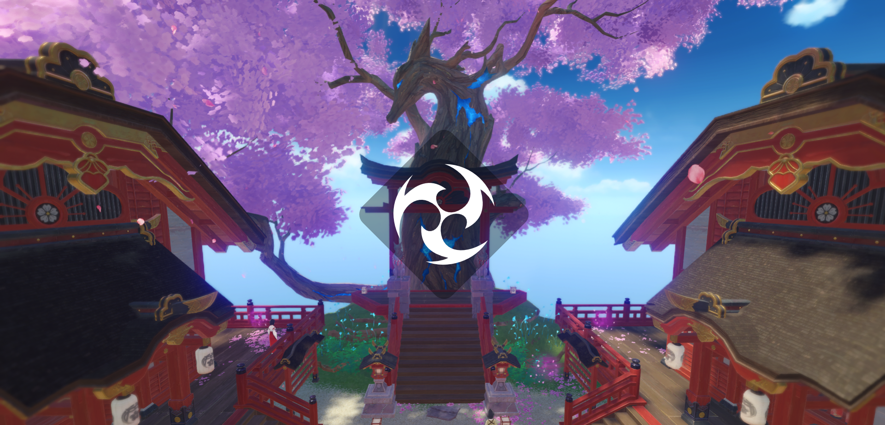
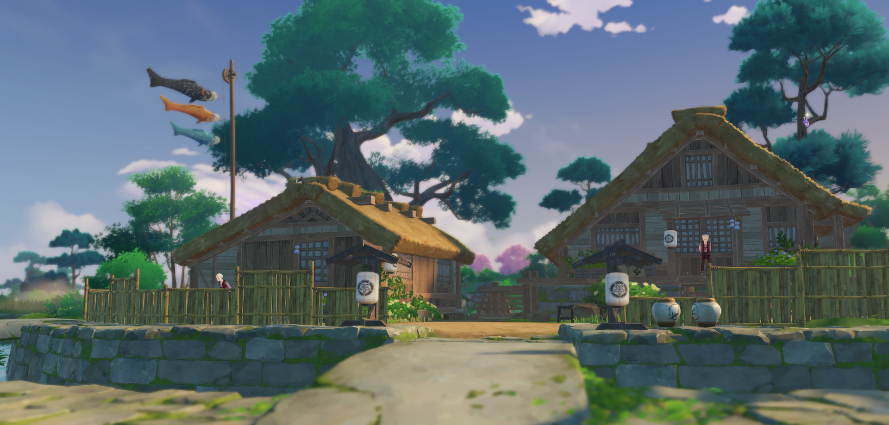
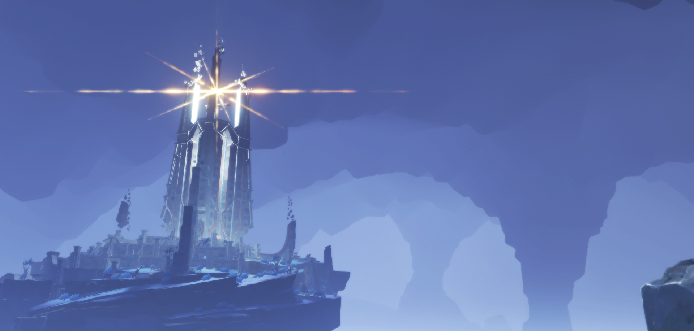

INAZUMA
- Země věčnosti -

Izolované souostroví na dálný východě Teyvatu.
Překonejte nekonečné bouřky a vydejte se na ostrovy červeného javoru a třešňových květů. Na klikatých březích a vysokých útesech a v lesích a horách plných tajemství se staňte svědky Věčnosti, kterou pronásleduje Její Excelence, Všemohoucí Raiden Shogun.
Inazuma je jednou ze sedmi oblastí Teyvatu. Je to souostroví , které uctívá Raiden Shogun, bohyni blesků a věčnosti — která je také vůdcem řídícího orgánu, Inazumského Shogunátu. Inazuma se nachází přibližně 4 km jihovýchodně od přístavu Liyue a těsně sousedí s Temným mořem.

Enkanomiya, původně známá jako Byakuyakoku a Tokoyokoku, je oblast nacházející se v Inazumě.
Lze do ní vstoupit přes hluboké jezero východně od svatyně Sangonomiya a legenda praví, že odtud pochází lidé z ostrova Watatsumi. Enkanomiya se nachází pod ostrovem Watatsumi a může být považována buď za součást Teyvatu, i když je od něj poněkud odpojena, nebo jako část Temného moře.
Pro vstup do Enkanomie je třeba rozlomit pečetě na pěti skalách Goshou a získat perly umístěné ve svatyních pro Klíč od měsíční hlubiny, což by umožnilo vstup do Enkanomiya za předpokladu, že jsou duchovní žíly spojující Enkanomii a ostrov Watatsumi plynule spojené a člověk, má srdce, které je „čisté jako voda“. Podle legendy byl klíč ukován z Orobashiho krve.